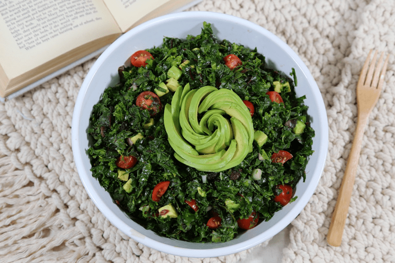
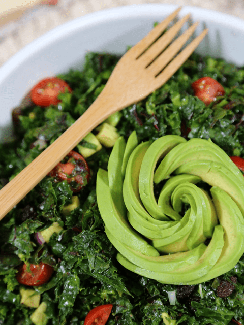

Three Green Salad
~ raw, vegan, gluten-free, nut-free ~
In this recipe, magic happens! But before I get into that let’s acknowledge that this salad is packed with some dense nutrients. These particular greens are as green as green gets when it comes to veggies. And dark green veggies are packed full of goodness.

Bitter, Tough Greens, Yum…
But, as exciting as that news may be, not everyone enjoys them because they are tougher, more bitter and very fibrous to eat. I am surprised as to how many people I know have never eaten any of these three greens that I have listed in the recipe. Granted they are not the most palatable of greens so this makes it a win.
So how do we make these three greens more appealing? There are several techniques within this recipe that will transform these tough, bitter greens into a wonderful salad. First, one of the main keys in how you cut the greens. Trust me, this makes a huge difference.
We must chiffonade the greens!
In French this means “made of rags,” so slicing a food into very thin strips is known as a chiffonade. Lining up the leaves of greens and slicing across yielding long thin strips is a chiffonade. This is also done with herbs, such as basil or mint, by stacking the leaves, rolling them up in a tube and cutting across the roll into ribbons. This method is useful for softening tougher greens like kale and chard, which can be hard to chew when left in bigger pieces.
We must massage the greens!
Wait a minute… I want a massage?! Massaging greens breaks down the tough cellular walls which makes it easier to chew and for our digestion to break it down. With the leaves chiffonaded, we now want to sprinkle them with salt and lemon juice. The salt draws water out from the greens (softens them), and the acid in the lemon juice also breaks down the cellular wall (soften them). So as you can see, just a few simple steps can make all the difference in how this dish will be received.

Ingredients:
- 2 heads of curly kale (head = bunch)
- 1 head Swiss chard
- 1 head mustard greens
- 3 Tbsp lemon juice (1 large lemon)
- 1 tsp Himalayan pink salt
- 3 Tbsp Cold Press Olive Oil
- 1 1/2 tsp ground cumin
- 1 1/2 tsp red chili pepper flakes
- 1/4 cup red onion, diced
- 1/2 cup raisins or 1 diced green apple
- 1 avocado, diced
- 1 cup cherry tomatoes, halved
Preparation:
- Wash and remove the stems from the green leaves.
- Whereas there are nutrients within those stems, they will make the salad “woody” in texture. Save them for a smoothie.
- Pile a few on top of one another and roll real tight. Then chiffonade cut the greens.
- This is the most time-consuming part of this salad. But it is well worth it.
- If you are unfamiliar with this knife skill, you can Google it, there are tons of videos on it.
- Place the cut greens in a large bowl… one that gives you a little “elbow room” for the massage.
- Add the lemon juice and salt. Start massaging the greens, don’t be gentle, show them who’s the boss. This process usually takes me about 10 minutes.
- The greens will start to take on a limp, cooked appearance, this is when you know that you have given them a good massage.
- Add the olive oil, spices, and raisins. Run your fingers through it once more to make sure all the spices get evenly dispersed.
- Upon serving, add the diced avocado and cherry tomatoes.
- Gently toss and serve. I also like to add various nuts.
- Store the leftover salad in the fridge for three days.
© AmieSue.com